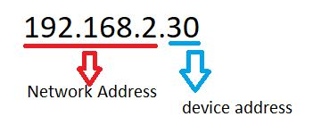
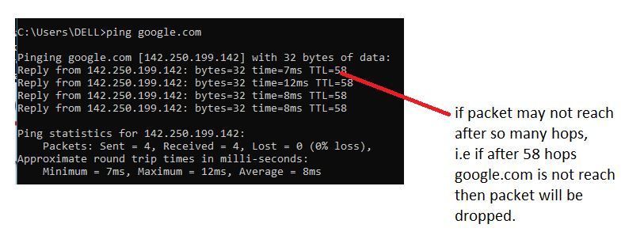
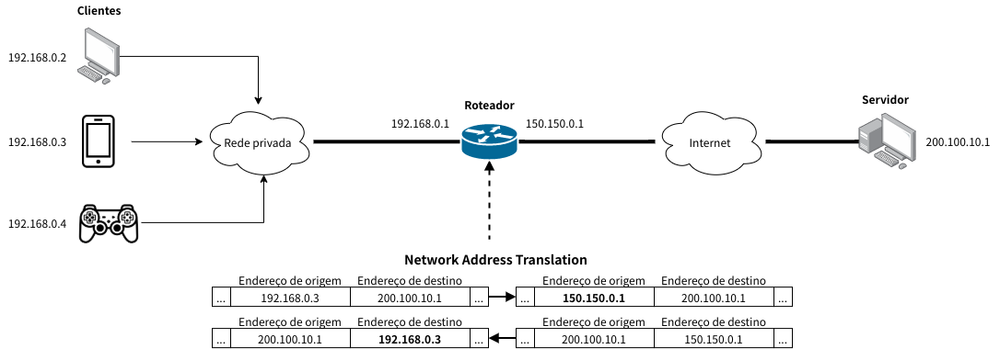

Network Layer:
- Here we work with Routes (using routers)
- hop-by-hop routing: sends the packets until it's reach to the destination.
- hopping routers to routers until it's reaches to correct router.
- Routing table is a data structure (every single route has a routing table.)

- Network layer consist control plane: which is responsible for creating routing table or addition of a new router.
- IPV4 - 32 bits, 4-words
- IPV6 - 128 bits
- Route hopping find out through Interne service providers.
- whenever router routes the packet, it should know subnet of the destination.
- Internet Society has created a Classes for this. (a class system)
- There are 5 types of IP Addresses
class A
class B
class C
class D
class E
| class |
range |
range upto |
| A |
0.0.0.0 |
127.255.255.255 |
| B |
128.0.0.0 |
191.255.255.255 |
| C |
192.0.0.0 |
223.255.255.255 |
| D |
224.0.0.0 |
239.255.255.255 |
| E |
240.0.0.0 |
255.255.255.255 |
Subnet Masking
- Subnet Mask for class C is 255.255.0.0 last two bytes changeable by user.
- 192.0.1.0/24 (the meaning of this is remaining 32-24=8bits. 24bits used by subnetmask out of 32) 8 bits are 0 to 255.
- who allocates the subnetmask? :
the ISP allows the subnetmasking.
class A will be allocated on First come first serve basis.
- The most probably the IP addresses are assigned based on the regions.
- reserved addresses: 127.0.0.1 known as ==> Localhost/Loopback addresses, here machine is act like both as a client and server.
- packet header is of 20 bytes: it contains: IP version;length;identification;flags;checksum;addresses;TTL (Time to leave) etc.

- IPV4=32 bits=232=4.3 billion
- IPV6 is 4 times larger than IPV4. i.e 232*4=3.4*1038numbers.
- cons of IPV6 is that, it is not backward compatible and entire world till not yet moved on IPV6.
MiddleBoxes
- Firewall: Global Internet and your trusted network.
- It filter outs the IP addresses based on various rules.
- Functions of firewall:
- it blocks the specific IP address.
- it modifies the packets.
- it set some rules to port numbers
- it set some flags in header of the IP
- it has it's own protocol
- NAT (Network Address Trnaslator): Network address translation is a method of mapping an IP address space into another by modifying network address information in the IP header of packets while they are in transit across a traffic routing device.

- Data Link Layer:
It uses DHCP (Dynamic Host Configuration protocol.)
- Every computer when connects to the internet must have data link layer address.
- Sometimes it may occur, the data link layer addresses may connected via automatically created data link layer addresses.
- Data Link Addresses also known as MAC addresses.
- It's not related to device it's related to the network. The router will assign the MAC address to the device.
This way machines will communicate with each other.
- In data link layer the router will attach to the correct IP address to the data packets ensuring that they got to the computer and device because all the Private IP addresses corresponds to correct IP address.